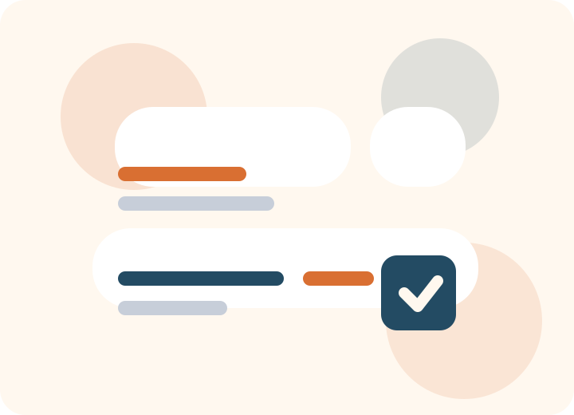

Design com criterio
Layouts, experiencia e hierarquia visual pensados para performance e clareza.
Blog estatico em HTML, CSS e JavaScript
Conteudo direto sobre design, tecnologia, estrategia e operacao para equipes que querem publicar com mais qualidade.

Por que acompanhar
Posts escritos para quem precisa transformar estrategia em paginas, produtos e processos reais.
Layouts, experiencia e hierarquia visual pensados para performance e clareza.
Guias e referencias praticas para tirar ideias do papel usando ferramentas modernas.
Fluxos simples para publicar melhor, manter consistencia e escalar conteudo.
Destaques